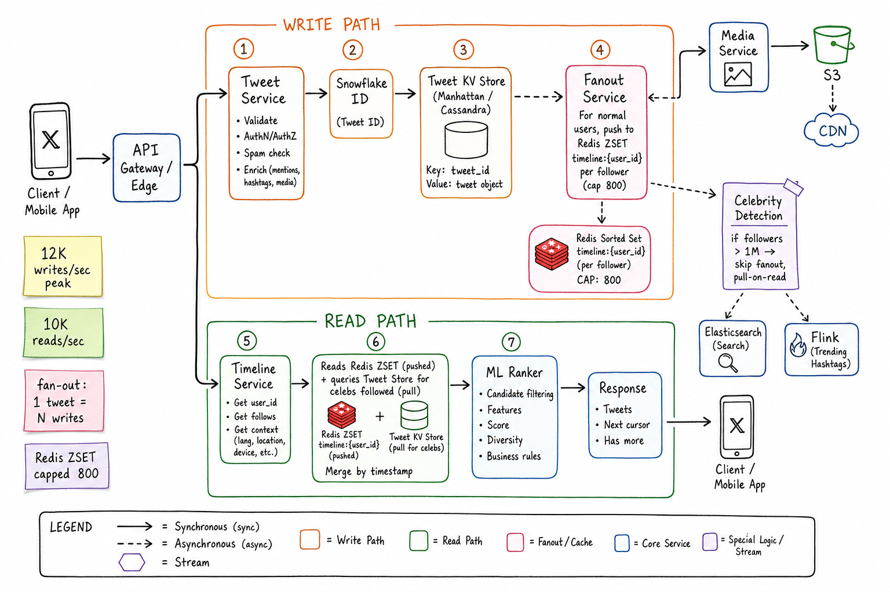
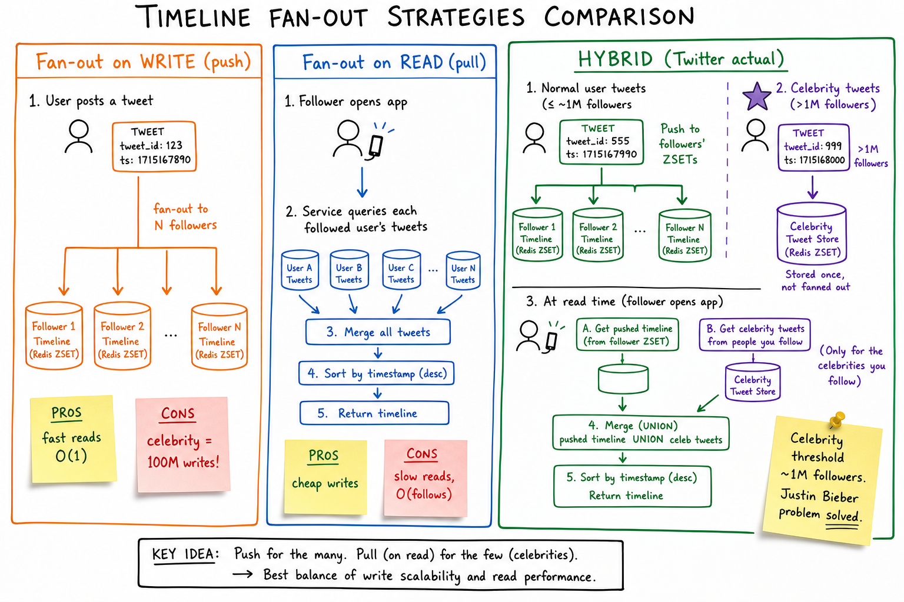
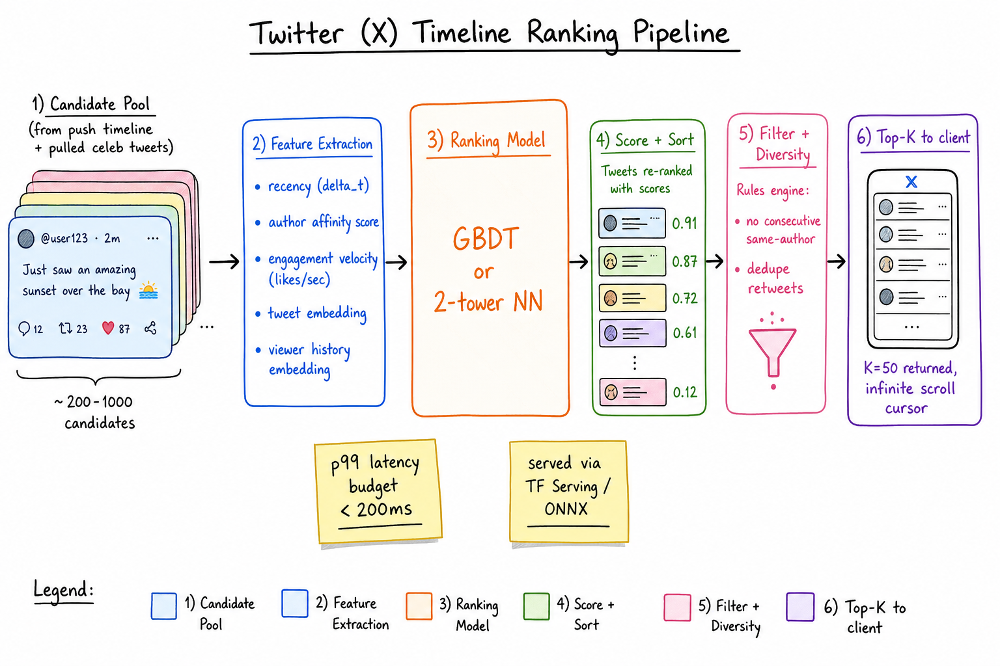

Twitter / X Timeline // HLD
The most-asked HLD problem. 200M DAU, 12K tweets/sec peak, ~10K reads/sec per active user. Hybrid push/pull fan-out (push for normal users, pull for celebrities), Redis ZSET per-user timelines capped at 800, ML re-ranking layer, Kafka stream into Elasticsearch + Flink trending.

Whiteboard HLD: client → API Gateway. Write path: Tweet Service validates, gets Snowflake ID, writes to Manhattan/Cassandra. Fanout Service pushes tweet_id into each follower's Redis ZSET (timeline:{user_id}) capped at 800. Celebrities (>1M followers) skip fanout and are pulled at read time. Read path: Timeline Service reads pushed ZSET + queries celeb store for celebrities the viewer follows, merges, sends to ML Ranker, returns top-K. Media goes direct to S3 via presigned URL + CDN. Kafka tweet stream feeds Elasticsearch (search) and Flink (trending hashtags).
01 — Requirements
Functional
- Post a tweet (text up to 280 chars + optional media)
- Follow / unfollow users
- Home timeline (chronological or ranked tweets from people you follow)
- User timeline (one user's own tweets)
- Like, retweet, quote tweet, reply
- Search tweets & users; trending hashtags
Non-Functional
- Read-heavy: reads dominate writes by ~100:1 — design for reads
- Low latency timeline: p99 < 200ms server-side
- Eventual consistency OK for timelines (a tweet showing 2s late is fine)
- High availability — 99.99%; reads must succeed even during partial outages
- Durability for tweet content; loss is not acceptable
- Scale: 500M MAU, 200M DAU, 100M tweets/day, ~1200 tweets/sec avg, 12K/sec peak
01a — Core Entities
| Entity | Key Fields | Notes |
|---|---|---|
| User | user_id, handle, display_name, follower_count, following_count, verified | Follower-count drives celeb classification. |
| Tweet | tweet_id (Snowflake), author_id, text (≤280), media_urls, reply_to, retweet_of, created_at | Immutable. Stored in Manhattan / Cassandra. ~280 bytes + media URLs. |
| Follow Edge | (follower_id, followee_id, created_at) | Directed graph edge. Sharded by follower_id for fast "people I follow" lookup. |
| Timeline | (user_id, tweet_id) sorted by created_at desc, capped 800 | Pre-computed Redis ZSET (timeline:{user_id}). |
| Celebrity Tweet | (author_id → recent tweet_ids), Redis ZSET | Pulled at read time instead of pushed. |
| Engagement | (tweet_id, user_id, type=LIKE|RT|REPLY|QUOTE), created_at | Counter denormalized onto tweet for hot display. |
| Media | media_id, owner_id, s3_url, mime, size, thumbnail_url | Stored in S3, CDN-fronted. Tweet stores only URL. |
| Hashtag Counter | (hashtag, window_bucket) → count | Flink-windowed; published to Redis for trending API. |
01b — API Design
Tweet write
POST /tweets
Idempotency-Key: ...
body: { text, media_ids?, reply_to? }
-> 201 { tweet_id, created_at }
DELETE /tweets/{id}
Timeline read
GET /timeline/home?cursor={t_id}&limit=20
-> { tweets: [...], next_cursor, has_more }
GET /timeline/user/{user_id}?cursor=...
GET /tweets/{id} # single tweet hydrated (counts, viewer engagement)
Social graph & engagement
POST /follows/{user_id}
DELETE /follows/{user_id}
POST /tweets/{id}/like
POST /tweets/{id}/retweet
GET /search?q=...&type=tweet|user
Streaming
WS /firehose # internal; Kafka mirror
WS /user/{id}/notifications # likes/RTs/follows to your tweets
Pagination is cursor-based, not offset. Cursor = last tweet_id (Snowflake = time-sortable). Idempotency-Key on writes lets clients retry safely after network blips without duplicating tweets.
02 — Estimation
Users: 500M MAU, 200M DAU
Tweets/day: 100M → ~1200 tweets/sec avg
Peak tweets/sec (10x): ~12K/sec
Reads dominate:
Each active user opens timeline ~50x/day
200M * 50 = 10B reads/day = ~115K reads/sec avg, ~1M/sec peak
Read:write ratio ~100:1
Avg followers / user: ~200 (median much lower)
Fan-out cost per tweet: 1200 * 200 = 240K writes/sec avg
peak: 12K * 200 = 2.4M writes/sec
-- before celeb optimization
Tweet object: ~280 bytes text + metadata + media URL
Daily storage: 100M * 1KB = 100GB/day raw
+ media (mostly off-system, S3+CDN)
Redis timeline cache:
200M DAU * 800 tweet_ids * 8 bytes ~= 1.2 TB hot
Shard across Redis Cluster (~30 nodes)
Celebrity threshold: ~1M followers -- top ~10K users
Push for everyone else, pull for these 10K.03 — Why It's Hard
- Fan-out asymmetry: a normal user tweet is 200 writes; Justin Bieber's tweet is 100M writes — same operation, 6 orders of magnitude apart.
- Read-heavy: can't compute timelines on every request — must pre-compute, but then write amplification.
- Eventual consistency vs UX: "I posted but I don't see it" is a real complaint — needs read-your-writes via local injection.
- Hot keys: trending tweets, celebrity posts — thundering herd on a single Redis key.
- Ranking latency: ML re-rank ~200 candidates in <100ms p99.
- Search + trending must operate on a write-stream, not point in time.
04 — Architecture
Mobile / Web Client
|
v
+----------------+
| API Gateway | (auth, rate limit, geo-route)
+----------------+
|
+-----------+---------------+---------------+
| | | |
v v v v
+------+ +-----------+ +-----------+ +-----------+
|Tweet | | Timeline | | Search | | Engagement|
|Svc | | Service | | Service | | Service |
+------+ +-----------+ +-----------+ +-----------+
| | | |
v v v v
+------+ +-----------+ +-----------+ +-----------+
|Snow- | | Redis ZSET| | Elastic- | | Counters |
|flake | | timeline: | | search | | (Redis + |
|IDs | | {user_id}| | (tweet ix)| | Cass.) |
+------+ +-----------+ +-----------+ +-----------+
| ^
v |
+------------+ | +--------------+
| Manhattan | +-----| Fanout Svc |
| /Cassandra | | (push to fol-|
| tweets KV | | lower ZSETs)|
+------------+ +--------------+
|
v
+----------------------------------+
| Kafka topic: tweets.created |
+----------------------------------+
| | |
v v v
ES Indexer Flink Analytics
Trending / Fraud / ML
+--------------+
| Media: S3 + | (presigned upload, CDN read)
| CDN |
+--------------+
05 — Fan-out: Push vs Pull vs Hybrid

Three timeline strategies side-by-side. Push precomputes every follower's timeline at tweet time (great reads, dies on celebrities). Pull computes timeline at read time by querying everyone you follow (cheap writes, slow reads). Hybrid = push for normal users, pull for celebrities, merge at read — what Twitter actually does.
| Strategy | Write cost | Read cost | Pros | Cons |
|---|---|---|---|---|
| Push (fan-out on write) | O(followers) per tweet | O(1) Redis read | Fast timelines; trivial reads | Celebrity death; wasted work for inactive followers |
| Pull (fan-out on read) | O(1) | O(N follows) DB scan | No write amplification; storage-cheap | Slow reads; doesn't scale to power users |
| Hybrid | O(non-celeb followers) | O(1) + O(celebs followed) | Pays for the common case; pulls only for the few | Two code paths; merge logic at read |
Twitter went push-first (2008-12), realized celebs were killing the cluster, then introduced hybrid (~2013). Modern X uses ML-ranked hybrid — chronological is now opt-in.
06 — The Celebrity Problem
A user with 100M followers writing a tweet would trigger 100M Redis ZSET inserts — bursty, hot-key, and pointless (only ~1% of followers are online to even see it).
Detection
- Threshold: follower_count > 1M (configurable, ~10K such accounts).
- Computed offline; cached on User row; reload on follower-count change.
Read-time merge
fun get_home_timeline(user_id):
pushed = ZREVRANGE(timeline:{user_id}, 0, 200) # Redis, O(K)
celebs_i_follow = filter(followee.celeb, get_following(user_id))
pulled = []
for c in celebs_i_follow:
pulled += ZREVRANGE(celeb_tweets:{c}, 0, 50) # Redis, O(K)
merged = merge_by_ts(pushed, pulled)[:200]
return rank(merged)
Per user, you follow on average ~5 celebs. So merge cost = read pushed ZSET + 5 small ZSETs → ~6 Redis ops, <5ms. Cheap.
Demotion / promotion
When a user crosses the threshold (gains 1M follower) we don't backfill or unfanout; we flip the flag and let the next tweet take the pull path. Eventual consistency is fine.
07 — Timeline Storage
Redis Sorted Set per user
key: timeline:{user_id}
type: ZSET
member: tweet_id (Snowflake, lexicographically = chronologically sortable)
score: tweet timestamp (millis)
Ops:
fanout: ZADD timeline:{follower} {ts} {tweet_id}
ZREMRANGEBYRANK timeline:{follower} 0 -801 # keep last 800
read: ZREVRANGE timeline:{follower} 0 199 WITHSCORES
- Cap at 800 — covers ~2 weeks for normal usage; older tweets re-fetched from Tweet Store on scroll.
- tweet_id is enough — we don't store the body in the ZSET; resolved via batch Tweet Store fetch (multi-get) at read time.
- Sharded by user_id across Redis Cluster (hash slot from key).
- Persistence: AOF every 1s; if Redis dies, last 1s of fan-out might need replay from Kafka.
Tweet Store (Manhattan / Cassandra)
- Wide-column KV:
tweet_id → full tweet object. - Partition key =
tweet_id; cluster key = (none, point lookup). - Replication factor 3, eventual consistency for reads, strong for writes.
See also: Redis deep dive, Sharding & partitioning.
08 — Ranking & Personalization

Candidate generation (push timeline + pulled celeb tweets) → feature extraction (recency, author affinity, engagement velocity, embeddings) → GBDT/2-tower NN ranker → diversity filter (no consecutive same-author, dedupe RTs) → top-K to client. p99 latency budget < 200ms end-to-end.
Score features
recency_score = exp(-lambda * (now - tweet_ts)) affinity_score = past_interactions(viewer, author) / decay velocity_score = likes_per_minute(tweet) since posted relevance_score = cosine(viewer_embedding, tweet_embedding) final_score = w1*recency + w2*affinity + w3*velocity + w4*relevance
- Default = ML-ranked. "Latest" tab is chronological-only (pure ZREVRANGE).
- Logged for offline retraining (impressions + engagements via Kafka).
- Served via TF Serving / ONNX; p99 model inference budget <100ms.
09 — Search
Search is a fundamentally different access pattern from timelines and needs a fundamentally different store.
- Kafka
tweets.createdtopic → ES Indexer worker → Elasticsearch index. - ES index sharded by tweet_id; analyzed text + hashtags + user mentions.
- Query:
GET /search?q=...→ Elasticsearch → tweet_id list → hydrated via Tweet Store multi-get. - ~30s ingest latency budget (search isn't as latency-critical as timeline).
- See Elasticsearch deep dive and Kafka deep dive.
10 — Media Pipeline
POST /media/upload → Media Service returns S3 PUT URL with 5-min TTL.media table: media_id, owner, mime, size, s3_key.11 — Trending Hashtags
Source: Kafka topic tweets.created (every tweet, parsed for #hashtags)
Job: Flink stream, keyBy(hashtag), sliding window (5 min, slide 30s)
Compute: count + exponential decay; geo-split if location known
Output: Redis ZSET trending:{region}:{window} -> hashtag scores (TTL 60s)
API: GET /trending?region=US -> ZREVRANGE 0 9
- High-cardinality hashtags handled via Count-Min Sketch + heap approximation (see Top-K cheatsheet).
- Per-region leaderboards keyed by
(region, period). - Cold-start spike protection: minimum-volume floor (don't surface "trending" with N<100 tweets).
12 — Scaling
- Redis Cluster for timelines, sharded by
user_id; ~30 nodes at 200M DAU. - Tweet Store (Manhattan/Cassandra) sharded by
tweet_id; LSM is read-once write-many = perfect. - Fanout Service stateless workers, pulled from Kafka
tweets.created; horizontal scale. - Hot follow graph: cache
following:{user_id}sets in Redis; invalidate on follow/unfollow. - Read replicas on Cassandra for tweet hydration (eventual is fine; ms-fresh).
- CDN for all media; ~95% of bytes never touch our servers.
- Geographic routing: user pinned to a region; cross-region writes async-replicated for follow graph & tweets.
- Snowflake ID generation — see Snowflake ID for the 64-bit layout.
13 — Edge Cases
- Read-your-writes: tweet just posted not yet fanned out → client injects locally; server confirms on next refresh.
- Inactive followers: we fan out to ZSETs of users who haven't opened the app in a year — wasteful. Mitigation: lazy fan-out (mark inactive after 30d; reactivate by pulling backlog on next login).
- Celebrity going viral: the celeb_tweets ZSET becomes a hot key. Mitigation: split-key sharding, or replicate hot ZSET to multiple Redis nodes for reads.
- Deleted tweets: mark deleted in Tweet Store; timelines still show stale tweet_ids; resolved at hydration (filter out deleted). Eventual purge by sweeper.
- Edits (recent feature): versioned tweet_id with edit history; ZSET unchanged; hydration returns latest version.
- Block/mute: filter at hydration (cheap), not at fanout (which would amplify writes).
- Redis node failure: AOF replay + Kafka replay rebuilds the ZSET; meanwhile pull-fallback for the affected shard.
- Bot spam: Fraud Service consumes Kafka; high tweet rate + low engagement = shadow-ban (still in own timeline, removed from followers').
- Cross-region consistency: follow graph eventually consistent; possible "follow but no tweets yet" 1-2s window.
14 — Real-World Equivalents
| Company / System | Notes |
|---|---|
| Twitter / X | Manhattan (key-value), Gizzard (sharding), Heron (streaming), Snowflake IDs (open-sourced) |
| Instagram Feed | Cassandra + TAO graph + Memcached; similar hybrid fan-out (see Instagram cheatsheet) |
| Facebook News Feed | Pull-heavy historically (with aggressive caching); now hybrid; multifeed aggregator |
| LinkedIn Feed | Espresso (KV), Voldemort, Kafka invented here; rank-heavy (job/skill graph) |
| TikTok For-You | Pure pull + ML ranking — no social-graph fanout. Different design class. |
| Pull-on-read with aggressive ranking caches; subreddit = pre-grouped pull source. |
15 — Interview Q&A
Push or pull — which do you choose?
Where does the celebrity threshold come from?
Why Redis ZSET specifically?
How do you handle "I just tweeted but don't see it"?
What's the worst hot key in this system?
celeb_tweets:{author_id} ZSET during a viral moment — tens of millions of readers hitting one Redis key. Mitigations: replicate the hot ZSET to multiple Redis nodes (read-only replicas), or shard the celeb tweet list itself via random suffix and union at read time. For comparison, normal-user timeline ZSETs are naturally sharded by reader so they're never hot.How do you generate tweet IDs?
Why not just use Postgres for everything?
How does the ML ranker stay fast?
What if a follower count blows up overnight?
celeb_tweets:{author_id} instead. We don't rewrite history — old tweets stay in followers' ZSETs and get aged out via the 800-cap eventually. Demotion (celebrity loses followers) is symmetric.How would you build Trending Hashtags?
How would you support edits?
(tweet_id, version). The ZSET still stores tweet_id (immutable identity). Tweet Store keeps version history; hydration returns latest. Add an "edited" flag in the UI to preserve trust. Cap edit window (e.g., 30 minutes) and edit count (~5) so the model stays bounded.